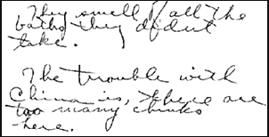

CHAPTER
TWO
Hubbard in the East
As a still very young man, with the financial
support of his wealthy grandfather, L. Ron Hubbard traveled throughout Asia. He studied
with holy men in India and Northern China, learning at first hand the inherited knowledge
of the East.
L. RON HUBBARD, Hymn
of Asia
Hubbard added to his mystique by making believe that
he had spent his teens communing with the great masters of Asia. Some part of Hubbard's
authority rests on his alleged journeys in China, India and Tibet, because Scientology is
supposedly a reformulation of the mystic truths he learned them. By applying the rigorous
discipline of Western scientific method to the secrets of Eastern mysticism, Hubbard later
claimed to have isolated the laws of life itself.
Quite typically, Scientology accounts of Hubbard's
sojourn in the East are packed with contradictions. In one we are told his father was sent
to Asia in 1925, and that Ron travelled extensively between 1925 and 1929. Hubbard
allegedly spent a considerable period of time in the western hills of Manchuria, and while
in China visited many Buddhist monasteries. In his book Mission into Time,
Hubbard claimed he had studied with Holy men in Northern China and India. In What Is
Scientology? Hubbard's life is depicted in a series of amateurish paintings, amongst
them one of three fur-clad Tibetan bandits, with the caption: "In the isolation of
the high hills of Tibet, even native bandits responded to Ron's honest interest in them
and were willing to share with him what understanding of life they had." We can only
speculate how Hubbard incorporated facets of Tibetan bandit "philosophy" into
his science of the mind and spirit.
If provoked, the Scientologists hand out an article,
allegedly from a Helena newspaper (though the paper does not exist in the Helena records).
In the article, Hubbard described a "trip to the Orient" lasting from April 30,
when he left San Francisco, to September 1, when he returned to Helena to stay with his
maternal grandparents and attend high school. The year was 1927, not 1925. Scientology
accounts say Hubbard returned to the U.S. upon the death of his maternal grandfather, but
the clipping the Church provides says he was again living with this same grandfather, who
in fact died in 1931. In the article Hubbard said he had visited Guam, the Philippines,
Wake Island, Hong Kong and "Yokohoma."
In a short autobiography written for Adventure
magazine in 1935, Hubbard said:
"it was not until I was sixteen [in
1927] that I headed for the China Coast .... In Peiping . . . I completely missed the
atmosphere of the city, devoting most of my time to a British major who happened to be
head of the Intelligence out there. In Shanghai, I am ashamed to admit that I did not tour
the city or surrounding country as I should have. I know more about 181 Bubbling Wells
Road and its wheels than I do about the history of the town. In Hong Kong - well, why take
up space?"
So, we are led to believe that Hubbard travelled
extensively in China, Tibet and India between 1925 and 1929, though by his own account he
did not leave the U.S. until 1927. He purportedly learned the wisdom of the East, yet was
ashamed of his lack of inquisitiveness while there.
Shannon dredged up Ron's school records, from which we
learn that Ron spent the school year 1925-1926 at Union High School, Bremerton,
Washington, while his father was stationed at nearby Puget Sound. At the start of the
school year 1926-1927, Ron enrolled at Queen Anne High School, in Seattle. Harry Hubbard's
naval record shows that his first shore duty outside the U.S. began on April 5, 1927, when
he was assigned to the U.S. Naval Station on the island of Guam, in the western Pacific.
Ron left Queen Anne High School in April 1927.
Hubbard recorded two short visits to China in his
teenage diaries. The first in 1927, en route to Guam, and the second the following year.
The 1927 diary describes a round trip to Guam, with summaries of the people and places
Hubbard saw. The summaries are brief, as was Hubbard's time in the China ports. The President
Madison, on which he and his mother sailed, was a transport, not a cruise liner.
The President Madison visited Hawaii, where
Hubbard watched young men diving for coins. Hubbard was unimpressed with Yokohama,
Shanghai and Hong Kong. Any sympathy he felt for the people who lived in the squalor his
diary records quickly evaporated, and was displaced by a contempt which permeates all of
his descriptions of the natives of the places he visited. The President Madison took
Ron and his mother to the Philippines, where he complained about the idleness and
stupidity of the inhabitants. In Cavite, where they joined the Navy transport USS Gold
Star, a Lieutenant McCain told Ron that under a derelict cathedral crawling with
snakes were tunnels full of gold. Hubbard vowed to his diary that he would return.
Ron and his mother left Cavite on the Gold Star
for the rough seven day passage to Guam. In his diary, Hubbard gave his analysis of the
natives of Guam, the Chamarros. He considered them more intelligent than the inhabitants
of the Philippines, but felt they had hardly been touched by civilization. They did not
compare favorably with American youngsters. Hubbard's dislike of the Spanish inhabitants
of Guam was even more pronounced. Hubbard had been warned that his red hair would generate
considerable interest; as it was he claimed that the Chamarros fell silent at his
approach.
Hubbard spent about six weeks on Guam in 1927. On July
16, he left on the USS Nitro, leaving his parents behind. The pages covering the
journey back to the U.S. preserve his only philosophical speculation of the trip. Hubbard
and a young friend were perplexed by a book about atheism, so much so that Hubbard decided
he would have to wait until his return home before resolving this difficult issue.
Ron was the first to sight Hawaii. An officer told him
to wake the lookout, and Hubbard described his perilous climb to the crow's nest. The Nitro
docked at Bremerton, Washington, on August 6th, 1927.
According to his later accounts, Hubbard's diary was
the product of a sixteen-year-old who had studied Freudian analysis, read most of the
world's great classics, and started to isolate the rudiments of a philosophical system
some four years earlier. In fact, none of these subjects is even touched on in the diary.
Hubbard was at Helena High School from September 6, 1927 to May 11, 1928. While there he
joined the 163rd Infantry unit of the Montana National Guard.
In a notebook written when he was nineteen, Hubbard
described the events which led him to leave school and make his second trip to Guam. These
accounts show that Hubbard had a fanciful imagination even then.
On May 4, 1928, the inhabitants of Helena celebrated a
holiday. Hubbard described the procession of clowns and pirates along Main Street. After
the parade, he was driving two friends around in his 1914 Ford, when he was struck on the
head by a baseball. Hubbard pulled up and started a fight with his assailant, claiming to
have broken four of the bones in his right hand in the process (though later medical
records give no indication of this). The fight supposedly took place a few days before
school examinations, so Hubbard failed to collect the necessary credits toward graduation.
As it was, he had been doing badly, having had to repeat the first semester's geometry and
physics. 1
Hubbard visited his aunt and uncle in Seattle, and
from there, in June, revisited the Boy Scouts' Camp Parsons. After a week or two, he grew
restless and went off on a lone hike. The first night, he made camp about two miles beyond
Shelter Rock. While asleep he fell fifty feet, and when he recovered consciousness found
blood gushing from his left wrist.
At the end of June, Hubbard learned that the USS Henderson
would be leaving for the Philippines on July 1, and on impulse decided to join her. He
would return to his parents on Guam. Hubbard raced to San Francisco only to discover that
the USS Henderson had already left port. He decided to sign on as an ordinary
seaman with the President Pierce, which was China bound. but at the last minute
changed his mind and went chasing after the Henderson again. He caught up with
her in San Diego.
According to Hubbard's notebook, the Henderson's
Captain said he would need permission from Washington to join the ship. Time was running
out. Washington said Harry Hubbard's consent would be needed. An answer from Guam usually
took two days, but Hubbard was in luck. Permission came an hour before the Henderson
sailed. Meanwhile, Ron's trunk had been lost en route. He did not recover it for a year,
but in spite of this, Hubbard thoroughly enjoyed the voyage.
There are two accounts of this trip in the same
notebook. Although they are within a few pages of one another, they differ in detail. Ron
was already making a habit of elaborating his past, and the accounts teach us to question
the veracity of any Hubbard claim. The Henderson's passenger list shows that rather than
having been allowed aboard only an hour before, Ron was aboard fully 24 hours before she
sailed.
On Guam, the seventeen-year-old Ron was tutored by his
mother, a qualified teacher, for what should have been his twelfth or senior high school
grade. He was being prepared for the Naval Academy examination.
During this period, Ron made his second trip to China,
this time with both parents. China was still in the throes of civil war, and travel there
was limited. Hubbard kept a diary of his trip aboard the USS Gold Star. The ship
docked at Tsingtao on October 24, 1928, and stayed there for six days before putting to
sea for Ta-ku. The Hubbards then travelled inland to Peking, where they spent about a
week.
In his diary, Hubbard gave a fairly elaborate
description of the sights, probably seen on tours given by the Peking YMCA. He was
unimpressed by the marvels of Chinese architecture, and the only building which won his
vote was the Rockefeller Foundation. Even the Great Wall failed to elicit more than a
comment about its possible use as a roller coaster. Two years later, in another notebook
entry, hindsight had transformed the visit to the Great Wall into a far more romantic
experience, but that was Hubbard's way.
Hubbard's opinion of the Chinese was consistently low.
Among many other criticisms, he said the Chinese were both stupid and vicious and would
always take the long way round. While in Peking, Hubbard visited a Buddhist temple. He was
later to say that Scientology was the western successor to Buddhism, yet his only comment
at the time was that the devotees sounded like frogs croaking.
After Peking came Cheffoo and then Shanghai. Ron made
little comment about Shanghai. It was cold, and the native part of the city had only been
reopened to foreign nationals two weeks earlier. Then came Hong Kong, again with little
comment, and by December 15, the Chinese adventure was over and the Gold Star was
back at sea.
The deep understanding of Eastern philosophy acquired
by Hubbard in China was boiled down to a single statement in one of his diaries. He said
that China's problem was the quantity of "chinks" (see below).

| "They
smell of all the baths they didnt take. The trouble with China is, there are too
many chinks here." |
|
Inscrutable, but hardly a compendium of
the great thoughts of the Buddhist, Taoist and Confucian masters.
Hubbard was seventeen and this was his last visit to
China. In his diary, he made no reference to any meeting in Peking with "old Mayo,
last of a line of magicians of Kublai Khan," mentioned in one of his Scientology
books. 2 David Mayo would turn up far later in Hubbard's life,
as one of the rebels who split Scientology apart in the 1980s. But he is a New Zealander
and makes no claims of ties to Kublai Khan.
There is no record of Hubbard's supposed travels in
Tibet, the western hills of China or India. A flight change at Calcutta airport in 1959
seems to have been his only direct contact with the land of Vedantic philosophy. Indeed,
in one of his early Dianetic lectures he dismissed his teenage journeys, saying "I
was in the Orient when I was young. Of course, I was a harum-scarum kid. I wasn't thinking
about deep philosophical problems." 3
By Christmas 1928, Hubbard was back in Guam. He took
the Naval Academy entrance examination, failing the mathematics section. In August 1929,
Harry Hubbard and his family returned to the U.S. Harry was posted to Washington, DC, and
Ron enrolled at the Swavely Prep School, in Manassas, Virginia, for intensive study to
prepare him for the Naval Academy. His mother returned to her parents in Helena.
In December 1929, Hubbard acted in the school play. By
this time he had developed eyestrain and his near-sightedness prevented him from
qualifying for the Naval Academy. 4
Hubbard enrolled at the Woodward School for Boys on
February 30, 1930, and graduated that June. Woodward was a school run mainly for difficult
students and slow learners. At nineteen, Hubbard was a year late in graduating from high
school. At Woodward, Hubbard won an oratory contest. He was always a great talker. The set
subject was apt for a man later to be accused of entrapping his followers in a
brainwashing cult: "The Constitution: a Guarantee of the Liberty of the
Individual."
Hubbard's book Mission into Time says he
enlisted in the 20th Marine Corps Reserve while a student at George Washington University.
Shannon obtained Hubbard's Marine service record which confirms that Hubbard actually
joined the Reserve in May of 1930, four months before enrolling at the University. Within
two months, he had been promoted to First Sergeant, a leap of six ranks. When Shannon
asked the Marine Corps Headquarters they were as baffled as he was by such rapid peacetime
promotion. The answer is quite simply that the 20th was actually a Reserve training unit
connected to George Washington University. Hubbard later explained his promotion by saying
it was a newly formed regiment and his superiors "couldn't find anybody else who
could drill." 5
On October 22, 1931, Hubbard received an honorable
discharge from the Marine Reserve. In his service record, there is a handwritten note
under the character reference: "Excellent." In another hand beneath this is
written, "Not to be re-enlisted." There is no explanation of either statement.
Hubbard's discharge followed on the heels of criticism of his poor academic performance.
Differing claims have been made in Scientology literature for Hubbard's achievements at
George Washington University. It has been said he attended the first courses in nuclear
physics, even that he was "one of America's first Nuclear Physicists." 6 The former is unlikely (it was a little late to be the first
such course) and the latter is a downright lie. Even Hubbard's last wife, Mary Sue, has
admitted that her husband was not a nuclear physicist, though she made the preposterous
statement that he had never claimed to be. 7 The claim was excused as a mistake made by over-zealous
Scientologists, which remained uncorrected in literature copyrighted to Hubbard for 30
years. In fact, Hubbard made that very claim in a Bulletin called The Man Who Invented
Scientology, published in 1959.
Hubbard was not a "nuclear physicist" by any
stretch of the imagination. He was a student in the School of Engineering at George
Washington University, majoring in Civil Engineering. According to his college records, he
was enrolled in a course called Molecular and Atomic Physics in the second semester of the
1931-32 college year, receiving an "F" grade in what was certainly an
introductory course. By his own admission, Hubbard was poor at mathematics, 8 and his records support this by showing nothing better than a
"D." He was later to demonstrate how superficial his understanding of physics
was in a book called All About Radiation. Ignoring Hubbard's admission, two
Scientology biographical sketches say he graduated not only with an Engineering degree,
but also a Mathematics degree.
For some time Scientology publications carried the
legend "C.E." (Civil Engineer) after Hubbard's name. In fact, Hubbard failed to
graduate. At the end of his first year he was put on probation for his poor academic
performance, and at the end of the second asked to leave. In 1935, Hubbard wrote: "I
have some very poor grade sheets which show that I studied to be a civil engineer in
college." 9 Scientology official Vaughn Young says the idea that
"C.E." stands for "Civil Engineer" is mistaken. Apparently the
initials represents a certificate awarded in the early days of Scientology. The same logic
applies to Hubbard's BSc (Bachelor of Scientology), and his self-awarded "Doctor of
Divinity."
Hubbard's inflated claims usually have some slim basis
in fact. He was an elaborator, not an originator. His much publicized authority as a
scientific and philosophical pioneer was founded on his purportedly long, intimate
experience of Eastern mysticism, and his training as an engineer and physicist. Hubbard
built his house on the very shaky foundation of a two-week vacation in Peking and a Fail
grade in Molecular and Atomic Physics. Behind the prosaic facts was a clever and
articulate boy, who did not manage to keep up with his schoolwork. Far from the legend
Hubbard was to create, there is little exceptional about Ron Hubbard's childhood and
adolescence. Contrary to his later claims, he was with his mother until he was sixteen.
The evidence shows he was part of a loving family. His parents were probably upset by his
failure to win a place in the Naval Academy or to qualify as an engineer, especially in
the dark times of the Great Depression. Ron later said: "My father... decreed that I
should study engineering and mathematics and so I found myself obediently studying."
Hubbard was already writing in his teens, struggling
to generate fiction. His journals are packed with attempts at pulp stories. Even his diary
entries were obviously written for an audience, suggesting that even then Hubbard's
distinction between fantasy and reality had blurred.
FOOTNOTES
Quotations from and reference to Hubbard and
Scientology biographical sketches of Hubbard: Hubbard, Dianetics: The Original Thesis,
p.158. (Scientology Publications Organization, Copenhagen, 1970); Hubbard, Have You
Lived Before This Life? p. 298 (Dept of Publications Worldwide, England, 1968);
Hubbard, Mission into Time pp.5-6 (American St Hill Organization, 1973); Hubbard, The
Phoenix Lectures p. 34 (Publications Organization World Wide, Edinburgh); What Is
Scientology? p. xlii (CSC Publications Organization, Los Angeles, 1978); Flag
Divisional Directive 69RA, ""Facts About L. Ron Hubbard Things You Should
Know," 8 March 1974, revised 7 April 1974; Technical Bulletins of Dianetics &
Scientology, vol. 1, p. 2; vol. 3, p. 470; FSM magazine 1; Hubbard
diaries/notebooks (exhibits 62, 63, 65, Church of Scientology of California vs. Gerald
Armstrong, Superior Court for the County of Los Angeles, case no. C 420153)
1. H. R. Hubbard letter to
George Washington University, 19 September 1930.
2. What Is Scientology?
p. xl.
3. Research &
Discovery Series, vol. 4, p. 2.
4. H. R. Hubbard letter to
George Washington University, 19 September 1930.
5. Research &
Discovery Series, vol. 7, pp. 98f.
6. All About Radiation
(1979 ed.) dustwrapper.
7. Mary Sue Hubbard in vol.
7, p. 1083 of transcript of Church of Scientology of California vs. Gerald Armstrong,
Superior Court for the County of Los Angeles, case no. C 420153.
8. Hubbard, Story of
Dianetics and Scientology.
9. Adventure, 1935. |